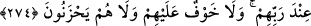

273. (Yapacağınız hayırlar,) kendilerini Allah yoluna adamış, bu sebeple
yeryüzünde kazanç için dolaşamayan fakirler için olsun. Bilmeyen kimseler,
iffetlerinden dolayı onları zengin zanneder. Sen onları simalarından tanırsın. Çünkü
onlar yüzsüzlük ederek istemezler. Yaptığınız her hayrı muhakkak Allah bilir.
Sadakalarınızı, cihâd ve gazâ ile meşguliyetleri sebebiyle ticâret yapıp kazanç elde
edemeyen fakirlere veriniz. Bu fakirlerin “Ashâb-ı Suffe” olduğu söylenmiştir. Bunların
tamamı muhâcirlerden olup sayıları dörtyüz civarındaydı. Ne meskenleri, ne de âileleri
vardı. Mescidin avlusunda kalıp geceleyin Kur’ân öğreniyorlar, gündüzleri ise hurma
çekirdeği çekip öğütüyorlardı. Rasûlullah (s.a.)’in gönderdiği her seriyyeye
katılıyorlardı. Ashâbtan, yanında fazla şeyleri bulunan akşam olunca bunlara getirirdi.
İbn Abbas (r.a.)’dan nakledilen bir habere göre; Rasûlullah (s.a.) bir gün ashâb-ı
suffenin yanına gelip onların fakr, cehd ve kalblerinin temizliğine bakarak şöyle
buyurdu: “Ey suffe ashâbı, size müjdeler olsun! Ümmetimden her kim sizin gibi olup
içinde bulunduğu halden razı olarak Allah’a kavuşursa cennette benim
arkadaşlarımdan olur.”[252]
Durumlarını bilmeyen kimseler, isteyicilikten kaçınmaları sebebiyle bunları zengin
sanırlar. “Taaffüf”, istemeyi terketmek ve nefsi zoraki de olsa istemekten alıkoymak
demektir. Fakat ya Muhammed (a.s.)! Sen onların fakîr olduklarını, zayıflıkları ve
hallerinin perişanlığından tanırsın. “Sîmâ ve simyâ” herhangi bir şeyin tanınmasını
sağlayan alâmet demektir.
“Yüzsüzlük edip insanlardan istemezler” âyeti hem istemeyi, hem de yüzsüzlük
etmeyi yasaklamaktadır. Bu kimseler, zâten istemekten kaçınmaktadırlar. Yüzsüzlük
etmeleri nasıl mümkün olur?
“İlhâf”, ısrarla istemek demek olup, isteyicinin karşısındakini istediği şeyi vermeye
mecbûr etmesi mânâsını taşır. Yalnız ihtiyaç halinde istemek câizdir. O takdîrde günah
olmaz.
Rasûlullah (s.a.), şöyle buyurmuştur: “Birinizin, ipini alarak arkasıyla dağdan odun
getirip satıp ihtiyâcını karşılaması, ister versinler ister vermesinler, insanlardan
istemekten daha hayırlıdır.”[253]
Yine Peygamber Efendimiz (s.a.): “Allah Teâlâ haya sahibi, halim ve afif kimseleri
sever. Kötü sözlü, yüzsüz ve isteyici kimselere buğzeder.”[254] buyurmuştur.
Allah hayır için harcadığınız her şeyi bilir. Bunlara en güzel şekilde karşılık
verecektir. Öyle ise sadaka vermeye yöneliniz. Yine sadakaya teşvik etmek üzere Allah
Teâlâ şöyle buyurmaktadır: